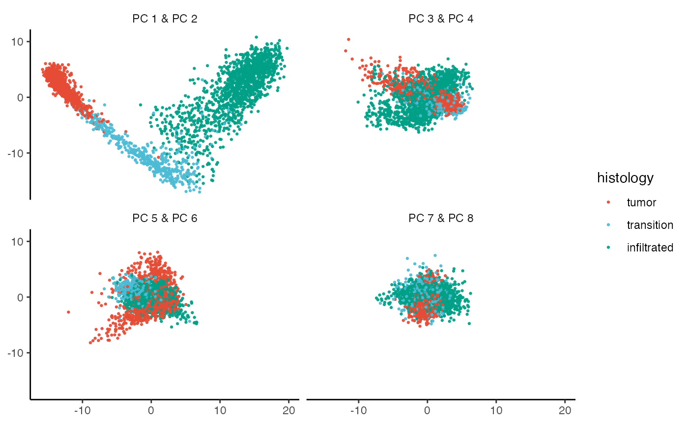
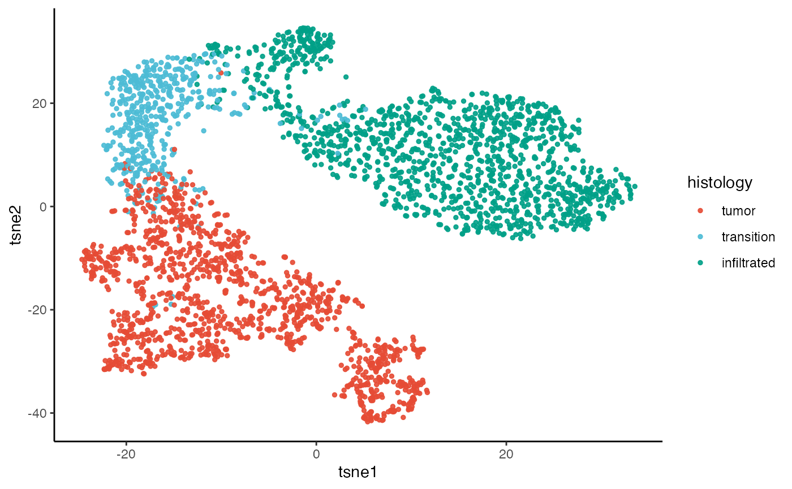
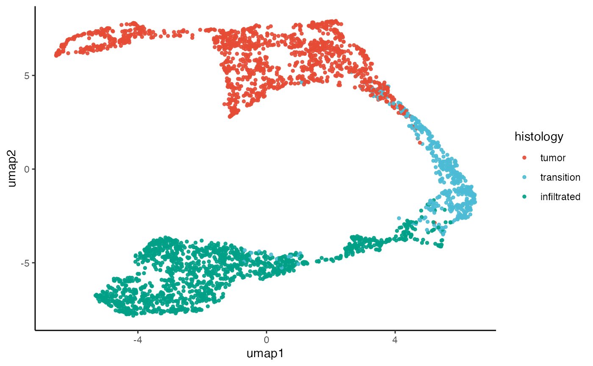

Dimensional reduction
dimensional-reduction.Rmd1. Introduction
This tutorial guides you through the dimensional reduction methods and plotting functions of SPATA2.
# load required packages
library(SPATA2)
library(SPATAData)
library(tidyverse)
# load SPATA2 inbuilt example data
data("example_data")
object_t269 <- loadExampleObject(sample_name = "UKF269T", process = TRUE, meta = TRUE)
# left plot
plotImage(object_t269)
# right plot
plotSurface(object_t269, color_by = "histology")

1. Principal Component Analysis (PCA)
Dimensional reduction must be initiated with principal component
analysis and the function runPCA(). You can specify which
variables of the assay are used to run the algorithm with the
variables argument.
# total number of genes in this (subsetted) object
nGenes(object_t269)
## [1] 15000
# identify most variable ones (using Seurat in the background)
object_t269 <- identifyVariableMolecules(object_t269, n_mol = 2500, method = "vst")
# variable mols
vm <- getVariableMolecules(object_t269, method = "vst")
head(vm)
## [1] "HBB" "MMP9" "CXCL10" "CARTPT" "HBA2" "FN1"
length(vm)
## [1] 2500
# run the algorithm
object_t269 <- runPCA(object_t269, variables = vm, n_pcs = 20)
# left plot
plotPCA(object_t269, color_by = "histology", nrow = 2, n_pcs = 8, pt_size = 0.5)
# right plot
plotPcaElbow(object_t269)
2. TSNE & UMAP
The SPATA2 function runTSNE() implements the
t-Stochastic Neighbour Embedding algorithm of
Rtsne::Rtsne() with the principcal components computed
during runPCA(). The same is the case for
runUMAP() which implements umap::umap() for
uniform manifold approximation and projection.
# run dimensional reduction
object_t269 <- runTSNE(object_t269, n_pcs = 10)
object_t269 <- runUMAP(object_t269, n_pcs = 10)
# left plot
plotTSNE(object_t269, color_by = "histology")
# right plot
plotUMAP(object_t269, color_by = "histology")